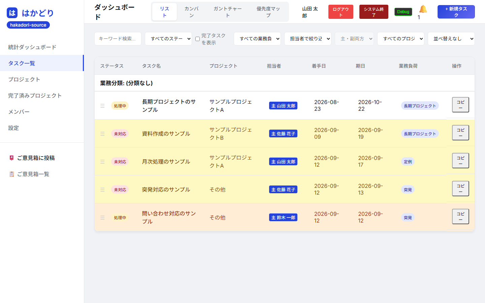

制作実績
まだ実績は多くありません。実際に公開・運用している事例と、 自社ツール、それに制作サンプルをご覧いただけます。
よさこいチーム「ReAct!!」ホームページ
長崎県佐世保市・諫早市を拠点とするYOSAKOIチームのホームページ制作。活動報告・メンバー募集・演舞依頼の 受付までを1つのサイトにまとめました。
課題
チームの活動報告や演舞依頼の受付を、非エンジニアのメンバーでも自分たちで更新できるようにしたい。
成果
ブログ機能（検索・絞り込み対応）と、ログインして投稿・編集・削除ができる管理画面を構築。 Googleフォームによる入会・演舞依頼受付も統合しました。
工夫した点
管理画面はタイトル・日付・担当者名・本文・画像アップロードのみのシンプルな構成にし、 サーバー費用や保守の手間がかからない構成にしました。
タスク管理ツール「はかどり」
小さなチーム向けのタスク管理ツールです。インストール不要・データを外に出さない構成で、 共有フォルダに置くだけで数人のチームで使えます。約9,000行のコードをすべて自分で設計・実装しました。 無料で配布しています。

課題
抱えている仕事の重さが件数では見えない。3件でも全部が数日がかりなら手は空かないのに、 その実態が数字にならず、改善のしようがなかった。
成果
タスクに「業務負荷」をHELP！／大／中／小の4段階で必ず付ける設計にし、 件数ではなく重さで抱えている量が見えるようにしました。リスト・カンバン・ ガント・優先度マップの4つの表示を用意しています。
工夫した点
クラウドを使わず、データを1つのファイルに収める構成にしました。 社外に出せない情報でも扱え、バックアップはファイルのコピーだけで済みます。
業種別の制作サンプル
実際のお店のページはご依頼主のものですので、そのまま見本としてお見せすることができません。 そこで、架空のお店を設定して、 どんなホームページになるかが分かるものを用意しました。 料金や電話番号を含め、掲載内容はすべて架空のものです。
写真がなくても作れます
2件とも、著作権を放棄した写真（CC0）と、こちらで描いた図版だけで作っています。 お店の写真がまだ無い場合でも、同じように形にできます。